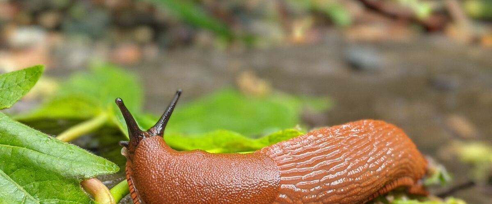
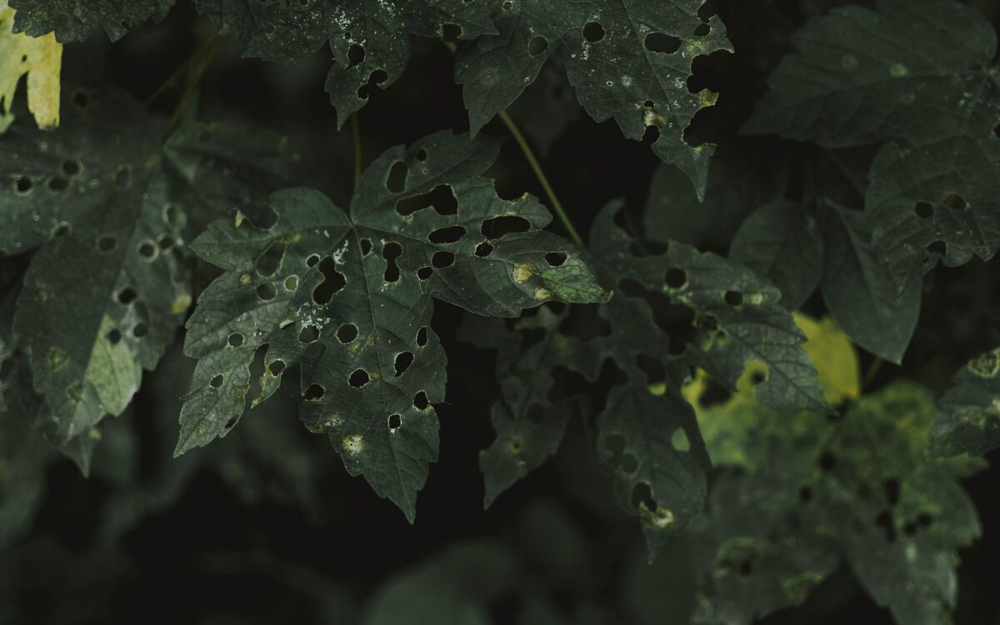

How to Control Slugs in a Northwest Garden
Practical, pet-safe ways to protect seedlings, lettuce and strawberries from the Pacific Northwest's most famous garden pest.
If you garden west of the Cascades, you will meet slugs. The mild, damp climate that makes the Northwest so green is perfect for them, and they are most active exactly when your seedlings are smallest: on cool, wet spring nights.
You won't get rid of them entirely, but you can easily keep the damage down.
Know when they strike
Slugs feed at night and on overcast, drizzly days, then hide under boards, mulch, pots and dense leaves. They go after tender seedlings, lettuce, beans, strawberries and dahlia shoots first. Damage shows up as ragged holes in leaves and shiny slime trails. A seedling can vanish overnight.
What works
- Iron phosphate bait. Sold under several brand names, it's the go-to choice: effective, and considered safe around pets, wildlife and food crops when used as directed. Scatter it lightly around plants after rain. Avoid older baits containing metaldehyde, which are toxic to dogs.
- Hand-picking. Head out with a flashlight an hour after dark, or check under a board laid on the soil each morning. It's surprisingly effective in a small garden.
- Beer traps. A shallow container sunk to its rim and filled with beer attracts and drowns slugs. Empty and refill it every few days.
- Copper tape around the top edge of raised beds and containers deters them from climbing in.
- Bigger transplants. Starting seedlings indoors and planting them when they're larger helps them survive a little nibbling.
Make the garden less welcoming
Water in the morning instead of the evening, so the soil surface is drier at night. Keep a strip of bare ground around beds, and hold off on thick mulch until the weather warms. Clear out boards, weeds and debris where slugs hide during the day. And encourage their predators: ground beetles, garter snakes and birds all eat slugs.
What doesn't work as well as you'd hope
- Eggshells and coffee grounds. Popular, but slugs cross them without much trouble, especially once rain softens them.
- Diatomaceous earth. It works only while dry, which in a Northwest spring is rarely for long.
- Salt. It kills slugs, but it also damages your soil and plants. Keep it out of the garden.

Is it really slugs?
Holes in leaves have other causes too. Slime trails and damage at night point to slugs or snails. Lots of tiny round pits in young leaves of radishes, arugula or eggplant are flea beetles. Ragged holes with small green droppings in kale or broccoli are caterpillars; see cabbage worms and aphids. Earwigs chew irregular holes at night too, and often hide in dahlia and lettuce leaves by day.
A simple spring routine
- Before you plant, lay a few boards or upturned pots near the bed. Check under them each morning for a week and remove what you find.
- Sprinkle iron phosphate bait lightly around the bed the day you sow or transplant.
- Refresh the bait after heavy rain, and check seedlings on damp evenings.
- Once plants have a few sets of true leaves, they can usually outgrow light damage, and you can ease off.
- Do it again in late summer for fall crops, when the rain returns.
Spring is the critical time. Start checking and baiting as soon as you sow, especially for lettuce and beans.